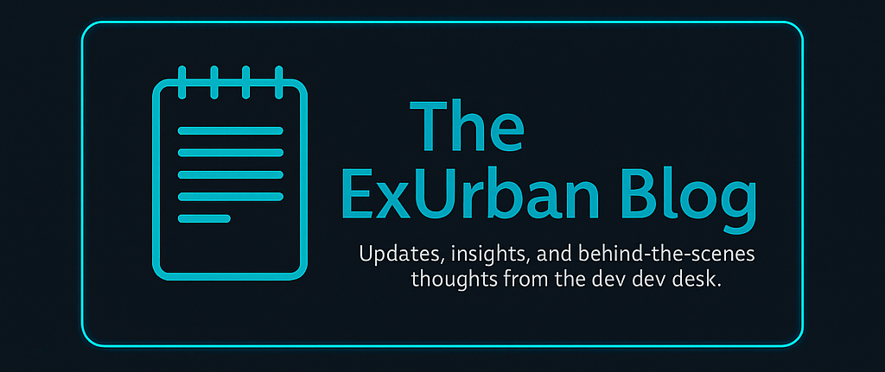

🖥️ Top 5 Tools We Use to Keep Client Sites Running Smooth
We’re not just builders — we’re operators. At ExUrban Technologies, we care about what happens after your site goes live. Whether you're running a one-page portfolio or a small business storefront, here's how we make sure your site doesn’t just look good… it works reliably 24/7.
Published: May 2025
1. UptimeRobot — Because You Deserve to Know When Your Site Blinks
You shouldn't have to find out from a customer that your website is down. We use UptimeRobot to monitor site availability and performance. If anything hiccups — even for a few seconds — we get notified instantly so we can check logs, server response times, and fix it before anyone notices. ✅ Bonus: We show our clients how to set this up for free monitoring post-launch.
2. Cloudflare — Performance + Protection in One Smart Layer
Cloudflare sits in front of your site like a digital bodyguard and turbocharger. It helps pages load faster with caching, protects against basic threats like bots and DDoS, and adds an extra layer of reliability for traffic surges. 💡 Most of our builds include free-tier Cloudflare DNS & caching — it’s lightweight but powerful.
3. Netlify Drop / SiteGround Staging — We Test Everything Before You See It
We don’t publish directly to your live site without testing it first. On static builds, we often use Netlify Drop for staging; for WordPress clients, we use SiteGround’s staging area. This keeps your public site safe from “Oops, forgot a semi-colon†moments. 🛠Staging = safer launches and cleaner code.
4. TinyPNG & Squoosh — Optimized Images Without Sacrificing Quality
Performance matters — especially for mobile. We optimize all images using TinyPNG or Squoosh to reduce file size without degrading quality. This keeps page load times fast, bounce rates low, and SEO happy. 📸 Before you upload that gorgeous product photo… let’s compress it.
5. Google PageSpeed Insights — Your Site’s Diagnostic Scanner
After launch, we use PageSpeed Insights to audit your site’s load time, accessibility, and best practices. It's not just about the score — it's about what that score reveals. We use the report to make post-launch tweaks and offer actionable insights during our optional yearly review. 📈 If it’s laggy or clunky, we’ll find out why — and fix it.
↠Back to Blog